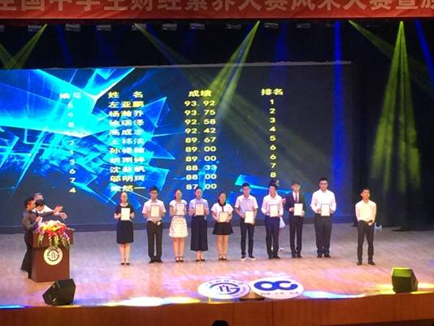

作者： admin 来源： 日期：2017-08-15 10:06
2016年7月，由西南财经大学和课堂内外联合举办的第二届全国中学生财经素养大赛决赛在西南财经大学正式举行。我校高2014级学生陈可欣和罗保森在此次比赛中获得特等奖，杨瀚乔获得一等奖和风采大赛第二名。我校被组委会授予“全国中学生财经素养优质教育基地”称号。

第二届全国中学生财经素养大赛颁奖现场
准备比赛和参加比赛的过程对每个同学来说都是一次难忘的经历！我们特别邀请在此次比赛中获奖的两位同学和大家分享他们参赛的体悟和感受！
杨涵乔
回首想来，仍感觉这一次的经历是如此的梦幻。半夜接到财经素养大赛组委会通知，希望我参加全国最优秀的十名考生才有资格参与的个人风采赛。在高兴的同时，我也在犹豫，为了参加此次考试，我已经耽误了学校的课程。对于高三的学生，牺牲宝贵的学习时间去参加此类比赛，真的利大于弊吗？当我犹豫着来到西财的学术报告厅，指导老师指着高大上的舞台说：“在最后一天，这个舞台将只属于你，你的一生能遇到几个专门属于你的舞台？也许今天你的选择会改变你的命运。”于是我留下来了，也才有了之后的经历。
风采赛要求我们选择一个题目进行8分钟的学术性演讲，我的选题是“城市交通拥堵，是限行还是限牌？”。本以为是个被前人研究过，好下手的题材，可当第二天和辅导我的研究生学长一探讨，才发现其涉及的问题之多，解决难度之大，实超出想象。为一个数据的真实性便要查阅数篇学术论文，为了一个理论是否适用便要翻看几十条百科条目，甚至为了PPT上一个版面的设计也会和学长讨论良久。从早上7点到晚上10点，PPT终于定下来了，可当进行完彩排后才发现，8分钟的限时演讲，让我讲了整整19分钟，这意味着大量的内容要进行删减，而离第二天的比赛仅剩11个小时。那种感觉真的像是热锅上的蚂蚁，这不是学校的作业，你不可能希求组委会像你的老师一样宽限时间，而台下的人也不是你所熟识的同学，他们没有耐心听你质量欠佳的演讲。那种无助感也许是从小就受人爱护的我们所从未体验过的，可你没有退路，只有全力向前，你只有把你最好的一面拿出来，去折服他们，只有把那种无助感抛在脑后，用尽你所有的才识与积累，去创造那一个最好的结果。于是通宵达旦的删改内容，抛弃掉一切冗杂的话语，累到在酒店浴缸里洗澡时睡着，终于按时完成了演讲。
第二天，我以总分第二的成绩完成了风采大赛，或许是过于紧张，当我回答完评委教授的提问时，我还可以说是神游天外，完全没注意到底得了多少分，愣了好一会儿才发觉自己竟然排名第二，当时只顾着兴奋，然后才一阵害怕。如果我没有拿到这样一个名次会怎样呢?失落？沮丧？抱怨努力了却没有收获？难道比我排名稍低的几人就真的不如我吗？他们努力的程度比我差么？或许不是，可也许真实的社会就是如此残酷，它重视的是结果而非过程，胜者王败者寇，于是我们就应该随波逐流，功利的去追逐结果么？不是，至少现在不是，名次再重要也不过是个数字，而你在追求名次这个过程中的艰辛才是你真正的收获。我们已经读过太多马云们，马克扎克伯格们的心灵鸡汤了，但大V们只告诉我们他们人前是如何的成功，却从来不说马云在创立阿里巴巴前被杭州电信局百般阻挠，扎克伯格为FACEBOOK无法盈利而深感苦恼。也许有一天阿里巴巴会倒，Facebook会无人问津，但马云的名字会在商界里永远流传，原因不是阿里巴巴这个结果，而是他创立阿里巴巴这个过程。结果满足的是你一时的虚荣，过程才是充实你内心的良药。
也许说的太多了，还是那句老话:：百闻不如一见，我们即将离开亲切的校园，此时不去磨砺自己又更待何时呢？长风破浪会有时，直挂云帆济沧海，以梦为马，不负韶华。
陈可欣
1、参加财经素养大赛有那些收获？
首先是更加明确了自己的兴趣爱好所在和今后专业选择的目标方向。在参加比赛前就经济方面的知识兴趣较大，在备赛学习的过程中，兴趣愈浓，更是明确了自己的目标。
其次是在升学方面，对申请各高校自主招生可能（只是可能）会起到一定帮助。其中大赛的主办方之一西南财大将财经素养大赛作为报考条件之一明确写入2016年的自主招生简章，而对于申请其他高校自主招生可能也会起到丰富获奖资料的作用。最后是获奖后得到的认同感和自信心吧。
2、参加财经素养大赛需要做哪些准备？
首先我们需要热爱财经，或者对其有一定的兴趣，希望通过比赛来明确自己的志向所在，否则从网上四月笔试初赛，网上五月笔试复赛，再到七月西南财大的现场笔试加面试决赛，没有耐心也没有勇气坚持下来。
其次要认真浏览比赛官网信息，它不仅提醒你考试时间安排和注意事项，而且还有考试技巧，包括大赛自编的备考资料教材的上传、面试技巧点拨的视频和最最重要的初赛复赛模拟题。通过做在比赛前两三天发布的模拟题，我了解了在网上答题的一个小时内如何安排时间，也弥补了在某一块的知识空白——复赛模考时难度陡增，很多知识点都不会，本以为复赛模考会像初赛模考那样对正式比赛没什么作用，但出于兴趣和求知欲还是在复赛模考后到复赛前的时间里找了一个晚上狂查资料，弄懂了复赛模考中所有不会的题和相关知识点，结果最后很幸运地起了很大作用，复赛模考和复赛的知识点竟然有很多重叠。
最后在准备决赛时，为稳妥起见还是要增加自己的课外阅读量和对财经新闻的关注，当然，为应对决赛中占比例很大的面试，既需要技巧，也需要提升自信心、逻辑思维能力和语言组织能力。
值得一提的是，决赛中笔试试题出现了对有关人民币国际化的背景材料的分析选择题，我看见题目的时候很兴奋，因为几乎都是政治老师在讲必修一时补充分析过的时政热点。财经素养大赛中的部分知识与政治的经济生活有重叠之处，即使考试方向和体系不同，但对于我这个文科生来说备考与学习在一定程度上相辅相成。
3、如何选择合适的课外活动和比赛，以及如何平衡课内课外？
真诚地讲，我向往的大学专业是经济学，因此十分看重这个比赛对财经能力的锻炼，但坦率地讲，不是因为财经素养大赛拥有的众多优秀财经类合作高校，也许我并不会参赛，我也许最终并不会报考西南财大，但它对我而言是在面对独木桥般的高考面前多出的一个机会和一条路。不选择相对不“功利化”的比赛于我有两个原因：第一，面对为你的将来提供平台的高考，不得不“唯有用是图”；第二，从规律中发现，越功利化的比赛中参赛的学生综合水平相对更高，竞争相对更大，（这也解释了为何有的比赛极易拿奖，高校却不认可，其实两者互为因果）这样的比赛对你的能力提升和挑战就更大，最后获奖的分量和满足感也更大。
高中阶段，我们要备战高考，自然应以课内为主，如果学有余力，再去参加自己感兴趣并认为有意义的活动和比赛。至于何为有余力，取决于每个人对自己的认知、为自己定下的目标和学习所处的阶段。就我个人而言，若是在高一期间，我愿意多一些有益的尝试，进入高二，应该开始学会判断活动比赛的价值到底多高和适时放弃，再往后走，若是心里开始感觉浮躁，杂事太多，就该停下来好好念书了。
其实课外活动与课内学习并不矛盾，但其前提条件是高效率和挤时间。参加比赛前，我想在网上参加初复赛耽误不了多少时间，在备赛阶段，也是抽出平常休息的空闲时间看了很多经济学方面的视频和书，而不是占用本应花在课内学习的时间。
我自认能够获奖，既是实力也是幸运，希望以上不多的经验能够对大家有所帮助。